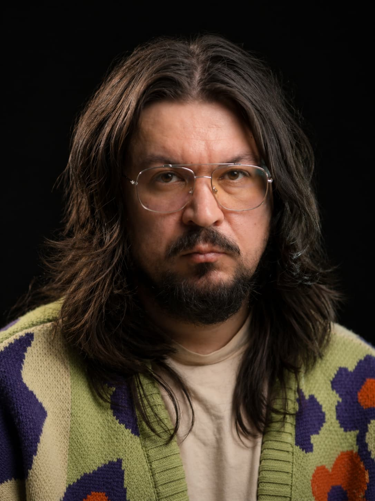
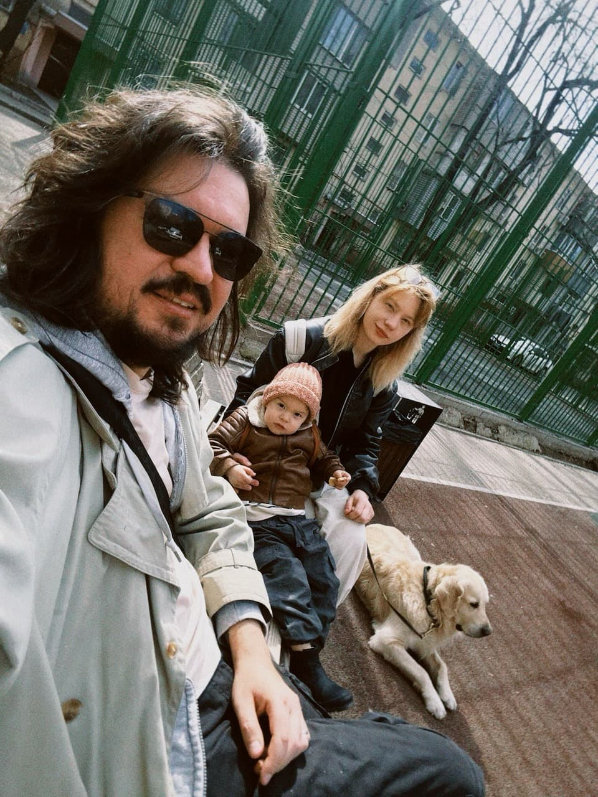
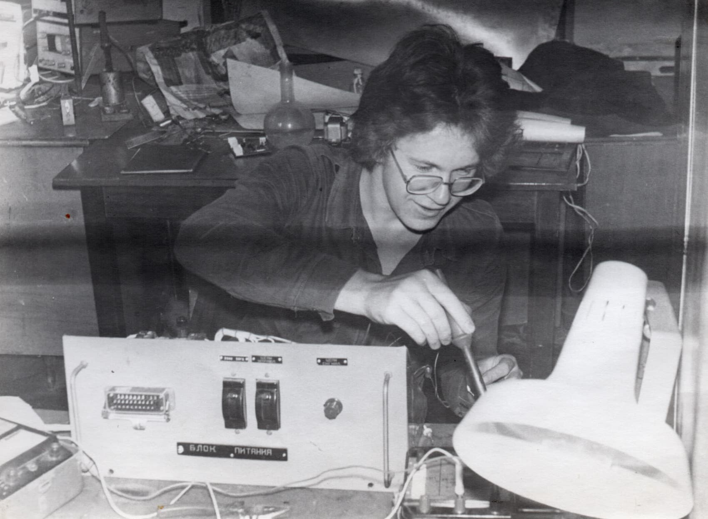
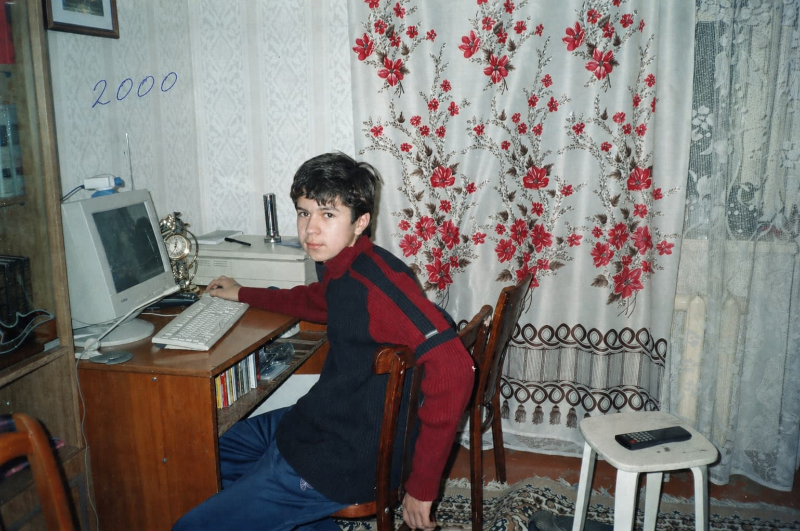
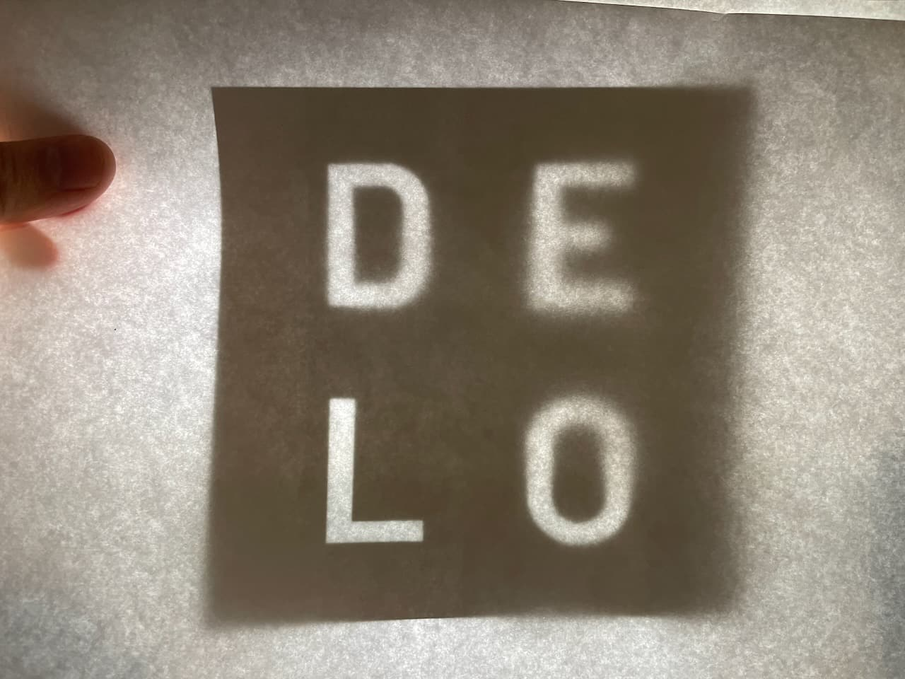

hi — I'm
Ilia Werner

I've been a designer for over 20 years. My main project is Design Lovers, a YouTube channel about design. Very much a family guy. I love my wife, son, and dog.

Where I'm from.
Mid-90sI started out in Angarsk, a small town deep in Siberia. My maternal grandparents sold a cow in the mid-90s to help my father, then a young scientist, buy a computer. My dad taught me the basics of object-oriented programming. Hardly anyone was online back then, and websites, let alone designing them, felt like a strange niche.

But I loved it. I taught myself CSS, HTML, Photoshop, and a little later Macromedia Dreamweaver. I went freelance, and my first paid work came around 2005.

What got me here.
2019In 2019 I founded my design studio, DELO. DELO is short for DEsign LOvers. I poured years into building it.

In 2025 I fired an employee. She wouldn't go; instead, she fired me — having hired lawyers who specialize in hostile corporate takeovers.
How is this possible? Easily, when you're sloppy with paperwork and bureaucracy and rely on verbal agreements instead of protecting yourself.
By the end of 2025, I had no business, no money, and personal debts — taken in my own name to fund the studio's cashflow.
Where I am now.
NowI focused on the YouTube channel and was awarded Tech Nation Exceptional Talent in the UK. What had been a side project became my main work. Design Lovers is now at 3M views · 55K subscribers · 300K monthly audience.
It's a channel about design as part of our lives — an important part of our shared human history and philosophy.
Find me:
hello@iliawerner.com
LinkedIn · YouTube · Behance
DELO STUDIO LTD, UK.